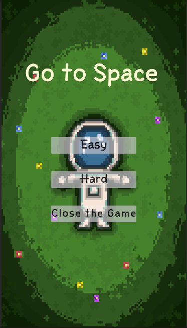
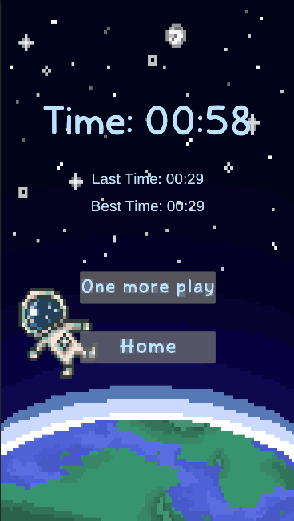
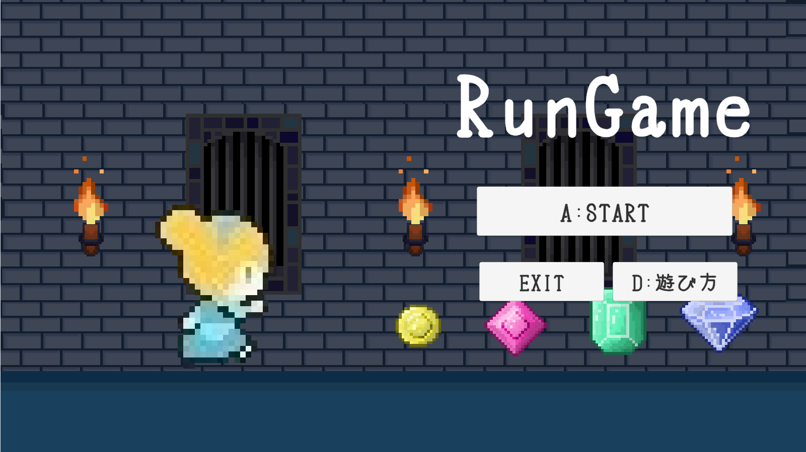
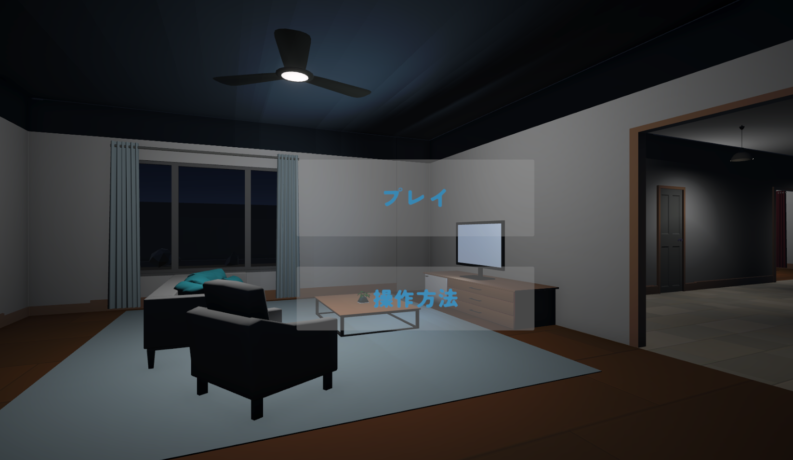
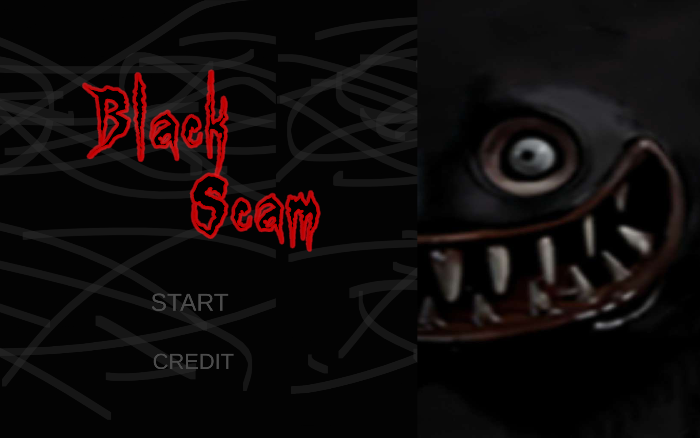

・使用ツール :Unity
・制作期間 :2週間
・言語 :C#
・制作人数 :1人
雲を足場にしながら宇宙を目指して上昇していくアクションゲームです。
プレイヤーは落下しないように移動し、ゴールまでの到達タイムを競います。
Easyモードでは純粋に上昇とタイムアタックを楽しめる構成にし、
Hardモードでは一定間隔で隕石をランダム生成し、
緊張感のあるゲームプレイに なるよう設計しています。
また、ドット絵の世界観 を活かし、タイトル画面とゲーム画面のデザインに統一感を持たせました。

・使用ツール :Unity
・制作期間 :2週間
・言語 :C#
・制作人数 :1人
プレイヤーが自動で前進し、ジャンプやスライディングで障害物を避けながら進むランゲームです。
障害物に当たるとゲームオーバーとなります。
取ったアイテムによってスコアが加算されます。
プレイヤーが靴を投げて敵を倒せる攻撃システムを実装しました。
当たり判定を利用して敵との衝突時に処理を行い、
一般的な攻撃ではなくテーマに沿った
攻撃方法にすることで、
ゲームの世界観と個性を表現しました。

・使用ツール :Unity
・制作期間 :2週間
・言語 :C#
・制作人数 :1人
自宅を舞台に、探索とイベント進行によって物語が展開する3Dホラーゲームです。
日常の中に徐々に異変が現れ、恐怖演出が発生する構成になっています。
ストーリー進行を管理するため、
C#でステートマシンを用いたシナリオ管理システムを
実装しました。
プレイヤーの行動や経過時間に応じて状態を切り替え、
テレビ演出やゴースト出現などのイベントを制御しています。

・使用ツール :Unity
・制作期間 :3週間
・言語 :C#
・制作人数 :3人
モンスターから逃げながらすべてのクリスタルを集めるゲームです。
学校の課題として、チームで既存ゲームの再現と研究を行いました。
チームで話し合い、ホラーゲーム『ダークディセプション』の再現に挑戦。
私はプログラマーとして、ギミック・UI・SE・エフェクトの実装を担当しました。
プレイヤーとの距離判定によるドア開閉、
シーン遷移、アイテム取得状況の管理を組み合わせ、
ゲーム進行に応じて利用状態が変化するエレベーターのイベント制御を実装しました。